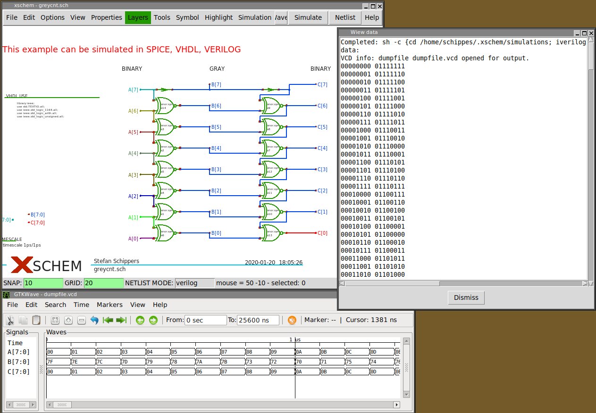

PREV
UP
NEXT
SIMULATION
- In XSCHEM a schematic usually contains all the details needed to run a simulation.
- When a schematic is correctly drawn just generate the netlist pushing the Netlist button, and then start simulation
by pressing the imulate button.
- XSCHEM has bindings to waveform viewers as well as simulators. Press the Waves button after simulation is completed to view the results.
- With proper netlisting attributes on leaf cells the same design can be simulated unchanged in Spice, Verilog, VHDL.
